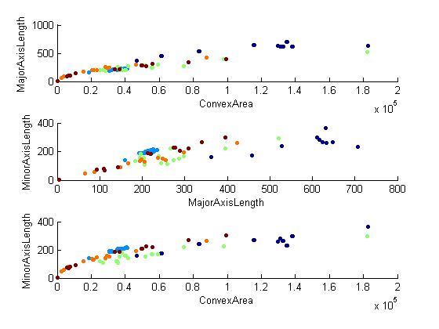
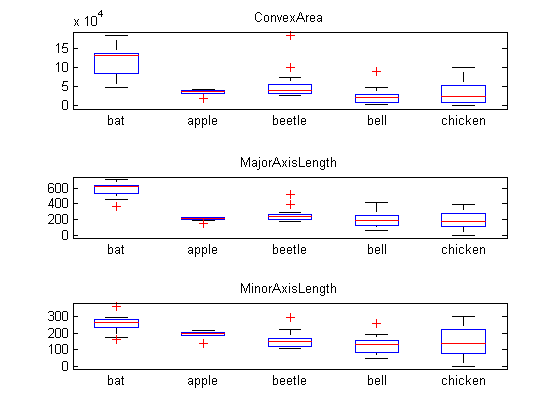

Contents
EFME 2013 LU Exercise 1
Authors:
- David Pfahler
- Matthias Gusenbauer
- Matthias Vigele
function main()
Get Input Images
[images,classnames] = getInput(); % Classnames to numbers % This is for numbers [ ~,~,class ] = unique(classnames,'stable');
Loading Images... Loading "bat" Images finished Loading "apple" Images finished Loading "beetle" Images finished Loading "bell" Images finished Loading "chicken" Images finished Loading Images finished
Get Features from Images
features = cell(length(images),1); %Choose your Features here! (Choose wisely :P) propertiesSelection = [4, 15, 16]; featureNames = selectFeatureNames(propertiesSelection); disp('Starting Feature Detection...'); fprintf('Features: %s',featureNames{:}); fprintf('\n'); for i = 1:length(images) features{i,1} = getFeatures(images{i},featureNames); end mat = cell2mat(features); disp('Feature Detection finished');
Starting Feature Detection... Features: ConvexAreaFeatures: MajorAxisLengthFeatures: MinorAxisLength Feature Detection finished
Scatter Plot Features
figure('name','The Dependency Of The Features'); subplot(3,1,1); scatter(mat(:,1),mat(:,2),10,class,'filled'); xlabel(featureNames{1}); ylabel(featureNames{2}); subplot(3,1,2); scatter(mat(:,2),mat(:,3),10,class,'filled'); xlabel(featureNames{2}); ylabel(featureNames{3}); subplot(3,1,3); scatter(mat(:,1),mat(:,3),10,class,'filled'); xlabel(featureNames{1}); ylabel(featureNames{3});
BoxPlot Features
figure('name','The Features'); subplot(3,1,1); boxplot(mat(:,1),classnames); title(featureNames{1}) subplot(3,1,2); boxplot(mat(:,2),classnames); title(featureNames{2}) subplot(3,1,3); boxplot(mat(:,3),classnames); title(featureNames{3})
end